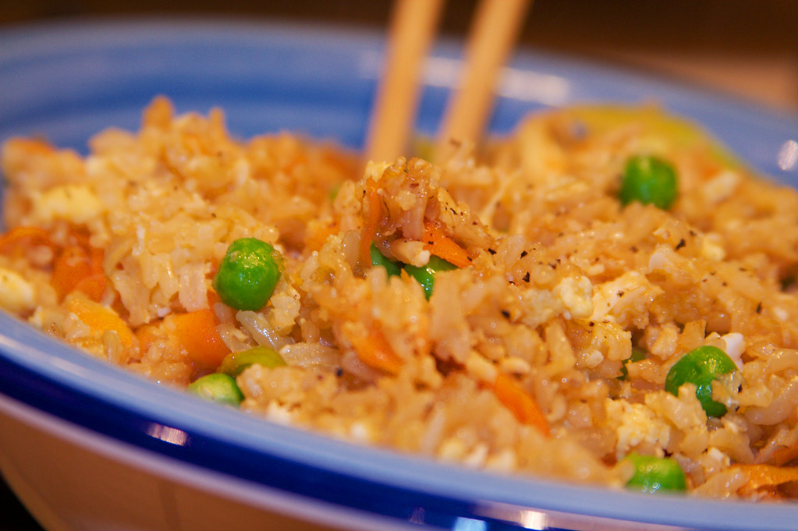

Egg Fried Rice

Image by Lloyd Morgan at Flickr
Description
This method is one of the simplest varieties of fried rice and can be extended to involve almost any type of meat or ingredient you might want to try. Fried rice goes with everything and it all depends on what you're craving. Pair it with Char Siu, Garlic Shrimp or Salt and Pepper Tofu — truly, anything goes!
Ingredients
- 14 oz uncooked jasmine rice
- 14 oz water
- 1 oz green onion
- 2 oz carrot
- 4 oz frozen corn and peas
- 4 large egg
- 0.50 teaspoon salt
- 0.30 cup water
- 2 tablespoon oil
Rice seasoning
- 1 tablespoon light soy sauce
- 1 teaspoon dark soy sauce
- 0.50 teaspoon salt
- 0.50 teaspoon sugar
- 1 teaspoon chicken bouillon powder
- 1 tablespoon oil
Steps
- Wash the rice three times, using fresh water after each rinse. Add the rice, followed by the water to a rice cooker and cook according to your rice cooker's instructions.
- Cut the green parts off of the green onions and dice into small pieces.
- Slice the carrot in half, then into strips. Hold the strips together and dice into small pieces. Combine with the frozen corn and peas in bowl.
- Crack the eggs into a bowl. Season with the salt, then set aside.
- Add the water to the bowl of vegetables and microwave for 2 minutes to cook.
- It's time to fluff the rice! Use chopsticks to stir and fluff rice for 1 to 2 minutes. This allows the excess steam to release and prevent clumping.
- Heat the wok on high and beat the eggs. Lower the heat to low and add the oil. Add eggs and stir gently, cooking them for about 20 to 30 seconds. Add the cooked rice on top of the eggs, flip and stir fry constantly, breaking apart the clumps of rice and eggs with a wok spatula for about 2 minutes.
- Add mixed veggies, increase the heat to high, flip and stir fry for another 2 to 3 minutes.
- Turn the heat down to low. In a small bowl, combine the light soy sauce, dark soy sauce, salt, sugar, and chicken bouillon powder, if using, and pour over the rice.
- Increase the heat to high and stir fry everything for another 2 to 3 minutes. You can also use chopsticks to help mix the fried rice or toss the wok.
- Add the oil and diced green onions, stir fry for another minute to mix everything together, then turn the heat off.
- Scoop the fried rice onto serving plate in a pile and garnish with more green onions.
Home